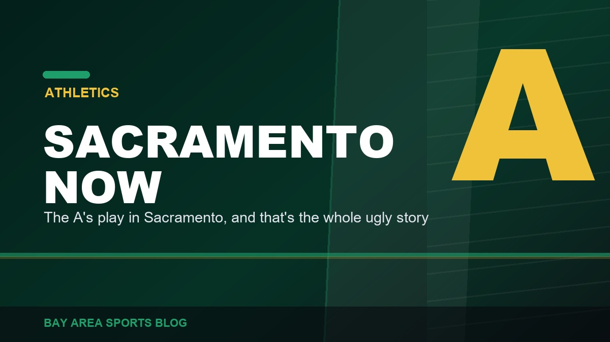

The A's Play in Sacramento Now, and That's the Whole Ugly Story
Fifty-seven years of Oakland baseball, boxed up and parked in a Triple-A ballpark while everyone waits on Las Vegas. Nobody in the Town asked for this.

Here is the state of the Athletics in 2026, laid out with no spin. They are not the Oakland Athletics anymore. They are just "the Athletics," a team with no city in its name, playing home games in West Sacramento at Sutter Health Park, a lovely little Triple-A yard that was never built to host a major-league franchise. This is their second year in that limbo, a way station on the road to a new ballpark on the Las Vegas Strip that is not scheduled to open until 2028. And to underline the whole surreal arrangement, the schedule even ships them to Las Vegas Ballpark for a homestand in June, hosting big-league games in a minor-league park in a city they have not moved to yet.
Read that back. A charter American League franchise, the team of the Bash Brothers and Rickey Henderson and Moneyball, is currently a road show. That is not a rebuild. That is not a rough patch. That is an ownership decision to strip a proud franchise down to a traveling logo, and it belongs in a column about villains because that is exactly what it is.
Oakland deserved better, and everyone who watched it happen knows it. This was a baseball town in the truest sense. The Coliseum was a concrete dump by the end and the crowds sold that story, but the story was never that Oakland stopped caring. The story was a fan base that kept showing up for reverse boycotts and green-and-gold funerals while the people who owned the team let the roof leak, both literally and every other way. You do not lose a fan base like that by accident. You have to work at it.
And so a region that has already watched the Raiders bolt for the desert got to watch it happen again, to a second team, in the same decade, headed to the same city. Two franchises, one Bay Area exit ramp to Las Vegas. If you are keeping the Bay Area Villains ledger, that is not a coincidence you shrug off. That is a pattern, and Oakland paid for it twice.
What stings most is that the on-field product is not the point of any of this, and it should be. There are real big leaguers wearing these uniforms. Brent Rooker turned himself into a legitimate middle-of-the-order bat and got paid to stick around, which in this context feels almost like a cruel joke, a genuine star handcuffed to a franchise playing out a corporate relocation in a farm-team park. Those players deserve a real home crowd. Instead they get a stopgap, a countdown clock, and a fan base scattered between a city they left and a city they have not reached.
So no, we are not going to pretend this is normal Bay Area baseball. The Giants are across the bay in a gorgeous park with a real identity. The Athletics are a ghost with a Sacramento zip code and a Vegas forwarding address. You can still root for the players. You should. But the organization that put them there earned every ounce of the resentment, and a Bay Area sports blog that pretended otherwise would not be worth reading. Some villains wear another team's colors. This one wore ours, took the money, and drove east on the 80.
More coverage: Bay Area Sports · Columns · Bay Area Sports Blog home